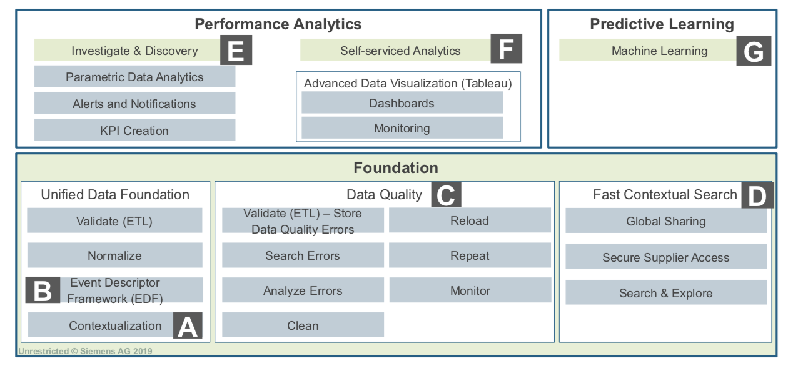
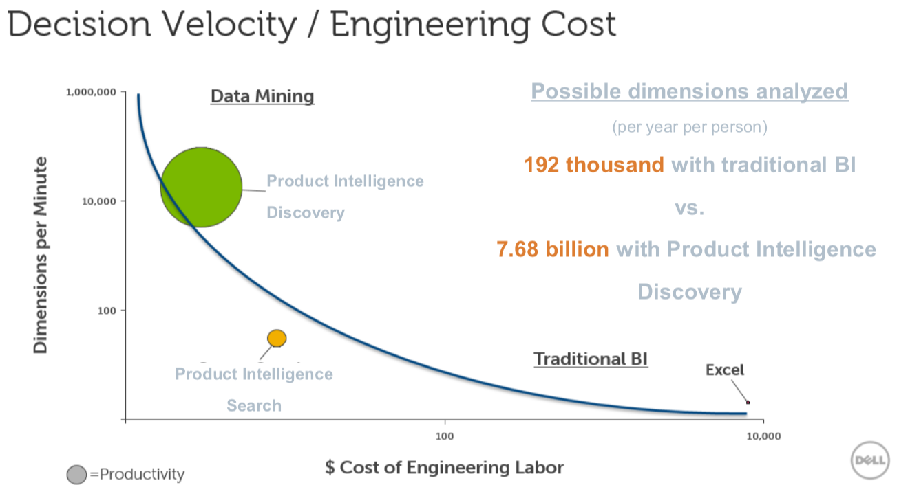
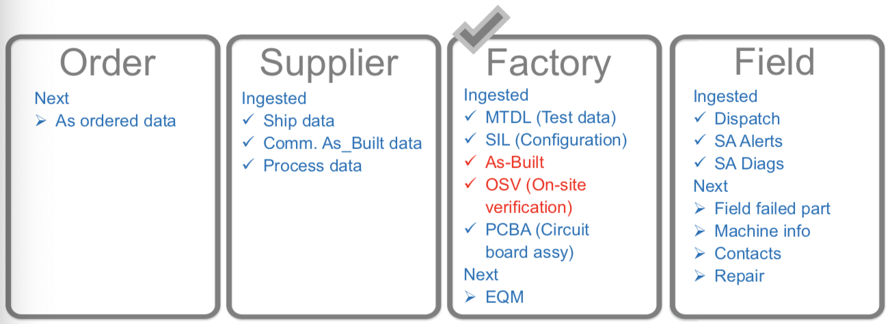
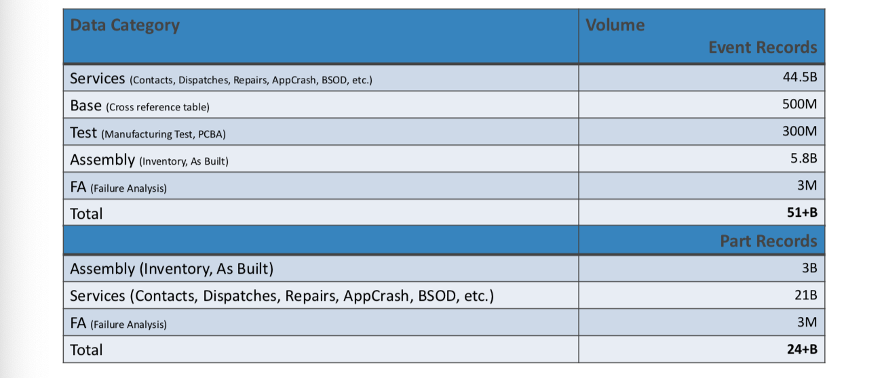

Dell Case of Quality Excellence
Author: Adam Updated: 23/05/2019
1. Product Intelligence Introduction
One data source related to product could hardly announce something interesting to the product. But however, with all data associated with product development, product realization and field performance, disconnected product data in the contextualized data lake would be unified and create value.
The challenges of product intelligence is the manully impossible of the supply chain and manufacturing complexity. With all the data multiplies up to a total complexity, the number of different combinations will be magnitude. The unbiased analysis is a critical topic as well.
The process of product intelligence is quite simple. Because the data model is defined once, so recurring efforts merely focused on new data only. Then thr unified data quality will be checked, which improves downstream analysis. Finally, the KPIs and Apps will be abstracted from data model and applied across entire organization and process.
In the article of PRODUCT INTELLIGENCE AND DIGITAL TWIN, we have discussed that in order to leverage the big data to transform the manufactures' business, four steps are needed. The first step is descriptive. We need to do fast contextual search, performance analysis and advanced data visualization. The second is diagnostic, within which, we should do the descriptice step and some discoveries. The third is predictive. We need to do fast contextual search, performance analysis and predictive learning. For the last part of prescriptive, we don't have to analysis the data but we need to think about what could we do if this happen again. A table with concepts in details is as following.

2. The Case of DELL
Dell Starts with Quality Management Using Reporting
Camstar QMS(quality management system) solution provides 360 Management of the Supply Base in “Real Time” mode with direct MES Feeds from the Dell Supply Base. Dell Commodity Team members engaged with multiple touch points using the QMS Solution for analytics and manufacture control which also provides a 360 degree global view into the product life cycle. QMS takes direct B2B feeds from the Supplier-Partner Manufacture Execution Systems (MES) reduces manual paper reporting. Phase I Suppliers typically supply QMS updates every 24-48 hours.
DELL Moves to leverage Big Data

DELL's Data Sources and Algorithms


Use Cases
Factory data types:
OSV: on site verification
As built
KPI: SQE_LRR (Line Reject Rate)
This KPI is built for the SQE group to show the Line Reject Rate. This is not specific to any commodity, supplier or factory. Each of those factors can be added if necessary from the Analytics Configuration. The chart will only show the calculated LRR value. The grid will show the PID Count, VID Count, CND Count, OSV Count, As Built + OSV Count, and the LRR value.
LRR = (CND + PID + VID) / (As-Built Count + OSV Count) 1,000,000
BIOS Version Use Case
- India based company ordered 12,500 servers
- Built in three groups, resulting in three different BIOS versions across the servers
- Company needed all servers on the same BIOS version
- DELL didn’t have a tool for retrieving BIOS versions
- Turn to Omneo
- Request came down to an Omneo user who was able to pull all 12,500 BIOS versions in about an hour
- Would have taken ~4 months with 1 full-time resource
- Value
- Better customer experience for the company
- Shorter turnaround time to resolve the issue
- Avoidance of unnecessary customer downtime
- Saved 4 months of man hours
Fan Supplier Use Case
- Fan supplier announces they are exiting the business effective immediately
- Single source supplier for two notebook products
- DELL scrambles to order tooling made for a new fan supplier
- Qualification process estimated to take 9 months
- UL certifications can take up to 24 weeks in some countries
- Executives were unable to estimate the risk and feared a long recovery time
- Turn to Omneo
- Able to find that 85% of total shipments for these two products was to U.S. and Canada
- Now able to focus efforts on expediting UL certification process for U.S. and Canada reducing time to 3-4 weeks
- Value
- Ability to concentrate efforts on specific certifications
- Visibility into distribution of risk if the product orders could not be filled
- Ability to calculate how many fans were needed for their last order
How PI Can Help Increase NPS Identify and Resolve Issues in Less Time
- Identify Issue : Contextualize data with schema-free dynamic data ingestion. Automatically discover hidden issues and predict trends. Search across billions of supplier, manufacturer and customer events in seconds and spot emerging issues.
- Manage and Control Exposure : Unify product-related data sources for analytics. Gain greater visibility into product, supply chain and field performance.
- Implement Resolution : Access the right information at the right time when you need it with contextualized data to pin point worst performing product configurations and highly impacted customers.
PI Customer Experience Use Case Disrupt Crashes and Deploy Resolutions Faster
- Dell uses PI to help achieve this goal and saw their NPS(net promote score) increased by 50%.
- Furthermore, PI greatly increase the productivity of Engineering resources.